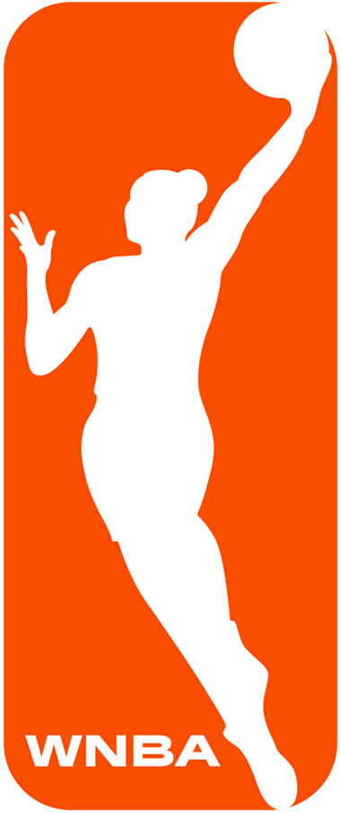
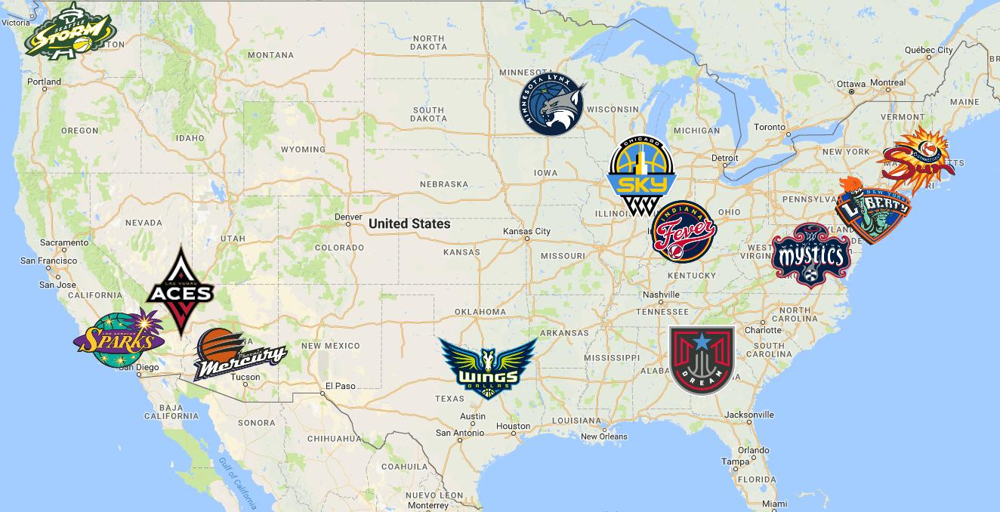

The WNBA
Womens National Basketball Association

About the WNBA
The WNBA,which features 12 teams and is the most successful womens professional team sports league in the world,is a unique global sports property combining competition, sportsmanship, and entertainment value with its status as an icon for social change, achievement, and diversity. it is a subsection of the NBA. The league, which counts Verizon as its leaguewide marquee partner, completed its 20th season on October 20, 2016.
Through WNBA Cares, the WNBA is deeply committed to creating programs that improve the quality of life for all people, with a special emphasis on programs that promote a healthy lifestyle and positive body image, increase breast and womens health awareness, support youth and family development, and focus on education.
WNBA Teams
The 12 WNBA Teams include
- Atlanta Dream
- Chicago Sky
- Connecticut Sun
- Indiana Fever
- New York Liberty
- Washington Mystics

- Dallas Wings
- Las Vegas Aces
- Los Angeles Sparks
- Minnesota Lynx
- Phoenix Mercury
- Seattle Storm